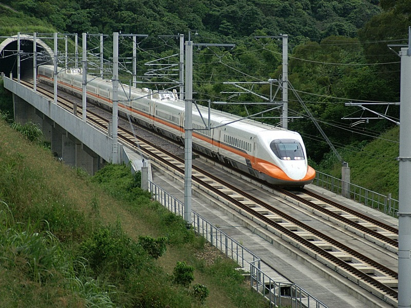

衣
QUEENSHOP 中壢中原店
📌地址: 桃園市中壢區實踐路97號一樓
想讓你的穿著有各式各樣的搭配嗎? Queen’s也是你的好選擇喔! 讓你的時尚流行成為你在校園的獨特logo，用衣服搭配出你的個人特色，每天走在校園之中，讓你與眾不同的個人氣質，將你的大學生活通通染成你獨特的顏色喔!
住

MixRent租屋搜尋
學校宿舍
📌中原除了很多美食跟商店以外，學校也有為了離家遙遠的同學所興建的良善和恩慈宿舍喔! 不但離學校很近，底下還有學生餐廳，除了有獨立衛浴的寢室，還有增設自習室跟研討室以及寬闊的交誼廳，不但能夠和同學互相交流，也可以認識其他來自不同科系的同學，如果身處異鄉的遊子們找不到良好的住處的話，中原大學良善和恩慈宿舍是你的好選擇，在一天結束之後好好的在宿舍休息，一起充滿精神度過在中原的每一天吧!
行

高鐵
📌離家很遠卻又想家的同學如果假日想回家探望父母親的話，難免都必須搭高鐵，而中原大學也有前往桃園高鐵的方法喔!
- 搭車地點：至高鐵桃園站一樓大廳5號出口，前往5號公車月台搭乘高鐵快捷公車－170高鐵桃園站－中壢。
- 路程：約20~30分鐘一班車，20分鐘可到達中壢市區，於「火車站前」下車，步行至「農會站」轉搭公車至中原。